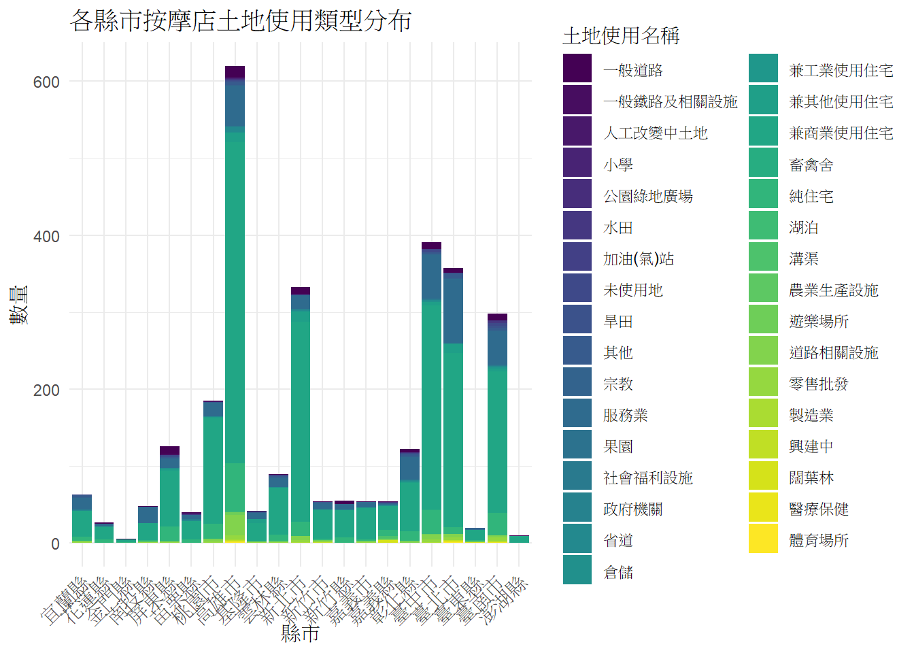

library(readr) # 用於讀取 CSV 檔案
library(dplyr) #用於整理資料表的工具串接API教學筆記
1 導入必要的套件
資料處理套件
處理API套件
library(httr) # 用於處理 HTTP 請求的套件(爬蟲)
library(xml2) # 用於處理 XML 格式的資料
library(jsonlite) # 用於處理 JSON 格式的資料
library(rvest) #解析網頁內容的工具數據視覺化套件
library(ggplot2) # 用於繪圖的套件
library(viridis) #用於色彩映射的工具
library(showtext) # 用於字體處理
library(plotly) # 把ggplot轉成互動式圖表html2 測試資料集+資料清理
formosa_massage <- read_csv("formosa_massage.csv")%>%
#head(10) %>% # 取前10筆資料
select(-服務) %>% # 排除 '服務項目' 欄位
filter(longitude != 0 | latitude != 0) # 排除經緯度錯誤值3 串接API查詢
串接國土利用現況查詢
運作原理是只要修改API連結中的經緯度，就可以查詢不同地點的土地使用情況。 並且當中只要取想要的資料加到欄位例如土地使用名稱。 回傳的API是XML格式所以要用xml2套件來解析。
for (i in 1:nrow(formosa_massage)) {
lon <- formosa_massage$longitude[i]
lat <- formosa_massage$latitude[i]
landuse_url <- paste0("https://api.nlsc.gov.tw/other/LandUsePointQuery/", lon, "/", lat, "/", 4326)
# 發送 GET 請求
response <- GET(landuse_url)
# 解析 XML 回應
xml_content <- content(response, as = "text", encoding = "UTF-8")
parsed_xml <- read_xml(xml_content)
# 提取所需的資訊
#土地類型 <- xml_find_first(parsed_xml, ".//Lname_C1")
#land_use_value <- xml_text(土地類型)
土地使用名稱 <- xml_find_first(parsed_xml, ".//NAME")%>% xml_text()
# 輸出結果
#Sys.sleep(1) # 避免過於頻繁的請求
formosa_massage$土地使用名稱[i] <- 土地使用名稱 # 將土地名稱存入dataframe中
}Warning: Unknown or uninitialised column: `土地使用名稱`.串接縣市與行政區的API查詢
要根據API回傳格式制定要用甚麼套件處理，縣市行政區的API回傳格式是JSON，所以我們使用jsonlite套件來解析。
for (i in 1:nrow(formosa_massage)) {
lon <- formosa_massage$longitude[i]
lat <- formosa_massage$latitude[i]
admin_url <- paste0("https://api.nlsc.gov.tw/other/TownVillagePointQuery1/", lon, "/", lat, "/", 4326)
# 發送 GET 請求
response <- GET(admin_url)
# 解析 json 回應
json_data <- content(response, "text", encoding = "UTF-8")
parsed_json <- fromJSON(json_data) # <-- 這裡從 read_xml 改為 fromJSON
# 提取所需的資訊
縣市 <- parsed_json$ctyName
行政區 <- parsed_json$townName
# 輸出結果
#Sys.sleep(1) # 避免過於頻繁的請求
formosa_massage$縣市[i] <- 縣市
formosa_massage$行政區[i] <- 行政區
} Warning: Unknown or uninitialised column: `縣市`.Warning: Unknown or uninitialised column: `行政區`.4 串接查詢結果呈現
print(formosa_massage)# A tibble: 2,995 × 8
...1 名稱 地址 latitude longitude 土地使用名稱 縣市 行政區
<dbl> <chr> <chr> <dbl> <dbl> <chr> <chr> <chr>
1 1 泰舒福養身館 200台灣… 25.1 122. 服務業 基隆市…… 仁愛區
2 2 晴羽SPA美容坊 807台灣… 22.7 120. 兼商業使用住宅…… 高雄市…… 三民區
3 3 米娜MinaSPA越式洗頭 811台灣… 22.7 120. 純住宅 高雄市…… 楠梓區
4 4 緣MiniSPA館 401台灣… 24.1 121. 純住宅 臺中市…… 東區
5 5 沐晴SPA美學 243台灣… 25.0 121. 兼商業使用住宅…… 新北市…… 泰山區
6 6 奈拉男女SPA館 807台灣… 22.7 120. 兼商業使用住宅…… 高雄市…… 三民區
7 7 靚秀佳人美學館 43548… 24.3 121. 其他 臺中市…… 梧棲區
8 8 雅竹美學館 403台灣… 24.2 121. 純住宅 臺中市…… 西區
9 9 紫晴SPA按摩坊 640台灣… 23.7 121. 純住宅 雲林縣…… 斗六市
10 10 春天美容護膚 640台灣… 23.7 121. 兼商業使用住宅…… 雲林縣…… 斗六市
# ℹ 2,985 more rowsggplot(formosa_massage, aes(x = 縣市, fill = 土地使用名稱)) +
geom_bar() +
labs(title = "各縣市按摩店土地使用類型分布", x = "縣市", y = "數量") +
scale_fill_viridis(discrete = TRUE) +
theme_minimal() +
theme(axis.text.x = element_text(angle = 45, hjust = 1)) 